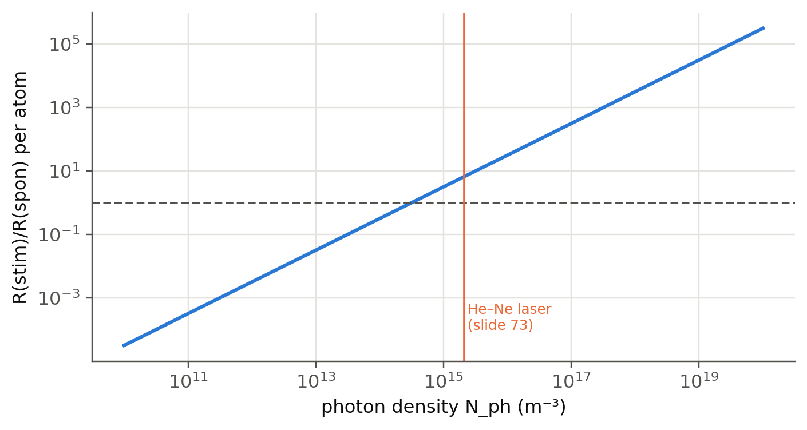

2 Absorption, spontaneous and stimulated emission
 Run this chapter’s code in Google Colab (no installation).
Run this chapter’s code in Google Colab (no installation).
Slides 8–10 (spontaneous versus stimulated emission, the three decay channels of an excited electron) and 15–19 (Einstein coefficients, laser requirements, spontaneous decay time).
2.1 Key relations
Three processes connect two levels \(E_1<E_2\) through photons of energy \(h\nu=E_2-E_1\) (slides 8–9, 15). Absorption and stimulated emission need a photon; spontaneous emission does not. The stimulated photon is a copy of the incoming one: same direction, same phase, same polarisation (slide 8). With \(\rho(\nu)\) the radiation energy density per unit frequency, the rates per unit volume are
\[ R_{12}=B_{12}N_1\rho(\nu),\qquad R_{21}=A_{21}N_2+B_{21}N_2\rho(\nu). \]
In thermal equilibrium \(R_{12}=R_{21}\), the populations follow Boltzmann, \(N_2/N_1=e^{-h\nu/k_BT}\), and \(\rho\) must be Planck’s law (Chapter 1). This is only possible for every \(T\) if (slides 16–17)
\[ B_{12}=B_{21},\qquad \frac{A_{21}}{B_{21}}=\frac{8\pi h\nu^3}{c^3}\quad\left(\times n^3\text{ in a medium of index }n\right). \]
Two ratios follow and they are the two laser requirements of slide 18:
\[ \frac{R_{21}(\text{stim})}{R_{12}(\text{abs})}=\frac{N_2}{N_1}\ \Rightarrow\ \text{population inversion},\qquad \frac{R_{21}(\text{stim})}{R_{21}(\text{spon})}=\frac{c^3}{8\pi h\nu^3}\rho(\nu)\ \Rightarrow\ \text{optical cavity}. \]
Without other processes, the upper level empties at the rate \(A_{21}\): \(N_2(t)=N_2(0)e^{-t/\tau_{sp}}\) with \(\tau_{sp}=1/A_{21}\) (slide 19). In a real medium the excited electron also decays non-radiatively (slide 10), so the measured lifetime is \(1/\tau=1/\tau_{sp}+1/\tau_{nr}\) and only the fraction \(\tau/\tau_{sp}\) of the decays emits light.
2.2 Why two levels cannot be inverted
Pump a two-level system optically, as hard as you like. Absorption takes atoms up, but the same photons stimulate them down with the same coefficient \(B\). With \(W=B\rho\) the stimulated rate per atom,
\[ \frac{dN_2}{dt}=W(N_1-N_2)-\frac{N_2}{\tau_{sp}}\ \Rightarrow\ \frac{N_2}{N_0}\Big|_\text{steady}=\frac{W\tau_{sp}}{1+2W\tau_{sp}}<\frac12. \]
At most the medium becomes transparent (\(N_2\to N_1\)). This is why the ruby laser needs a third level and why the semiconductor laser needs electrical injection (Chapter 3, Chapter 9).
2.3 From lifetime to Einstein coefficients
The spontaneous lifetime is the measured quantity. The \(B\) coefficient follows from \(A_{21}/B_{21}\). The ratio grows as \(\nu^3\): at short wavelengths spontaneous emission becomes fast and steals the inversion. This is one reason why the first stimulated-emission device was a microwave maser (1954), and why X-ray lasers are so hard.
Show the Python
trans = [("Cr³⁺:Al₂O₃ (ruby), slide 13", 694.3e-9, 3e-3, 1.76),
("Nd³⁺:YAG, slide 14", 1064e-9, 230e-6, 1.82),
("Er³⁺:silica (EDFA), slide 39", 1550e-9, 10e-3, 1.45),
("Ne (He–Ne), slide 69", 632.8e-9, 100e-9, 1.0),
("GaAs band-to-band (2e18 cm⁻³)", 870e-9, 2.5e-9, 3.6)]
rows = []
for name, wl, tau, n in trans:
nu = lz.c0/wl
rows.append({"transition": name, "λ (nm)": round(wl*1e9, 1), "τ_sp": f"{tau:.3g} s", "n": n,
"A21 (s⁻¹)": f"{1/tau:.3g}", "B21 (m³ J⁻¹ s⁻²)": f"{1/tau/lz.A_over_B(nu, n):.3g}"})
pd.DataFrame(rows)| transition | λ (nm) | τ_sp | n | A21 (s⁻¹) | B21 (m³ J⁻¹ s⁻²) | |
|---|---|---|---|---|---|---|
| 0 | Cr³⁺:Al₂O₃ (ruby), slide 13 | 694.3 | 0.003 s | 1.76 | 333 | 1.23e+15 |
| 1 | Nd³⁺:YAG, slide 14 | 1064.0 | 0.00023 s | 1.82 | 4.35e+03 | 5.22e+16 |
| 2 | Er³⁺:silica (EDFA), slide 39 | 1550.0 | 0.01 s | 1.45 | 100 | 7.33e+15 |
| 3 | Ne (He–Ne), slide 69 | 632.8 | 1e-07 s | 1.00 | 1e+07 | 1.52e+20 |
| 4 | GaAs band-to-band (2e18 cm⁻³) | 870.0 | 2.5e-09 s | 3.60 | 4e+08 | 3.39e+20 |
Long-lived (metastable) levels such as those of Cr³⁺ and Er³⁺ store energy for milliseconds. This makes inversion easy with modest pumps, and it makes these media good energy stores for Q-switching (Chapter 8). Semiconductors recombine in nanoseconds: they need large current densities but can be modulated at GHz rates (Chapter 16).
2.4 Stimulated versus spontaneous emission: the cavity
In thermal equilibrium the ratio stimulated/spontaneous is \(1/(e^{h\nu/k_BT}-1)\), about \(10^{-33}\) for red light at 300 K (Chapter 1). A cavity traps the emitted photons and raises \(\rho(\nu)\) in a few modes by many orders of magnitude. The figure shows the photon density needed for stimulated emission to win:
Show the Python
nu, dnu = lz.c0/632.8e-9, 1.5e9
Nph = np.logspace(10, 20, 200)
rho = Nph*lz.h*nu/dnu
ratio = rho/lz.A_over_B(nu)
fig, ax = plt.subplots(figsize=(7.2, 3.6))
ax.loglog(Nph, ratio)
ax.axhline(1, color=lz.INK2, ls="--", lw=1.2); ax.axvline(2.1e15, color=lz.PALETTE[1], lw=1.2)
ax.text(2.4e15, 1e-4, "He–Ne laser\n(slide 73)", fontsize=8, color=lz.PALETTE[1])
ax.set(xlabel="photon density N_ph (m⁻³)", ylabel="R(stim)/R(spon) per atom"); plt.show()
print(f"stimulated = spontaneous at N_ph = {lz.A_over_B(nu)*dnu/(lz.h*nu):.2e} m^-3")
stimulated = spontaneous at N_ph = 3.14e+14 m^-3Inside the He–Ne laser the ratio is about 7: thanks to the mirrors, stimulated emission wins. The ratio \(c^3\rho/8\pi h\nu^3\) is the number of photons per mode: \(N_\text{ph}\) divided by the number of modes per unit volume within the linewidth, \(8\pi\nu^2\Delta\nu/c^3=3\times10^{14}\) m⁻³. The cavity does not fill every mode. It selects one (or a few) modes and lets the photons pile up there. The spontaneous emission into all the other modes is lost: it limits the efficiency and adds noise (Chapter 19).
TipGoing further
- Degenerate levels. If \(E_1\) and \(E_2\) have degeneracies \(g_1\), \(g_2\), detailed balance gives \(g_1B_{12}=g_2B_{21}\) and the inversion condition becomes \(N_2/g_2>N_1/g_1\). Redo the derivation of slide 16 with degeneracies.
- From \(A_{21}\) to a cross section. For a transition with a normalised lineshape \(g(\nu)\), the emission cross section is \(\sigma_{em}(\nu)=\dfrac{\lambda^2}{8\pi n^2\tau_{sp}}g(\nu)\) (Füchtbauer–Ladenburg). Check the order of magnitude of the Er³⁺ value used in Chapter 4: \(\lambda=1.53\) µm, \(\tau_{sp}=10\) ms, \(\Delta\nu\approx4\) THz.
- Which \(B\)? Some books define \(B\) with the intensity \(I\), the photon flux or the angular frequency instead of \(\rho(\nu)\). The numerical values differ by \(c/n\), \(h\nu\) or \(2\pi\). Always check the definition before using a tabulated value.
- Non-radiative channels (slide 10). Multiphonon emission depends on how many phonons bridge the gap \(E_2-E_1\). This “energy-gap law” explains why the Er³⁺ \(^4I_{13/2}\) level (0.8 eV) is long-lived in silica but the \(^4I_{11/2}\) pump level decays in microseconds.
NoteComplements
- A. Einstein, “Zur Quantentheorie der Strahlung”, Physikalische Zeitschrift 18, 121 (1917): the original argument.
- Kasap, sec. 4.1–4.2; Svelto, Principles of Lasers, 5th ed., ch. 2.
- R. Loudon, The Quantum Theory of Light, ch. 1–2: why stimulated photons are identical.
2.5 Try it yourself
- From the rate equation of the two-level panel, derive the 1/e time to reach the steady state. Why does it shorten when the pump increases?
- An atom has \(\tau_{sp}=10\) ns at 500 nm. What is \(\tau_{sp}\) of a transition with the same dipole moment at 10 µm? At 1 nm?
- A He–Ne laser emits 1 mW in one mode. Estimate the power spontaneously emitted by the inverted Ne atoms into all other modes (\(\Delta N_{th}\approx10^{15}\) m⁻³, tube volume 0.2 cm³, \(\tau_{sp}=100\) ns).
- Show that \(R_{21}(\text{stim})/R_{21}(\text{spon})\) equals the number of photons in the mode.